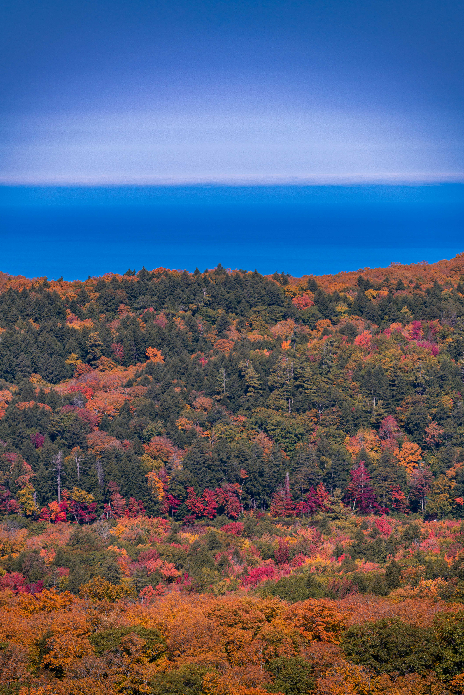
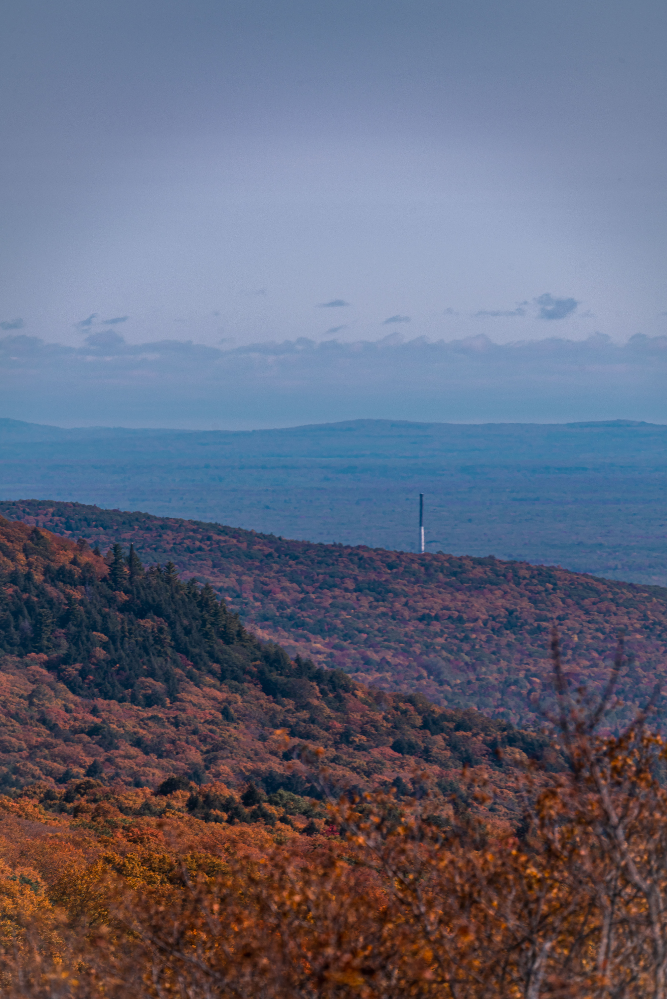
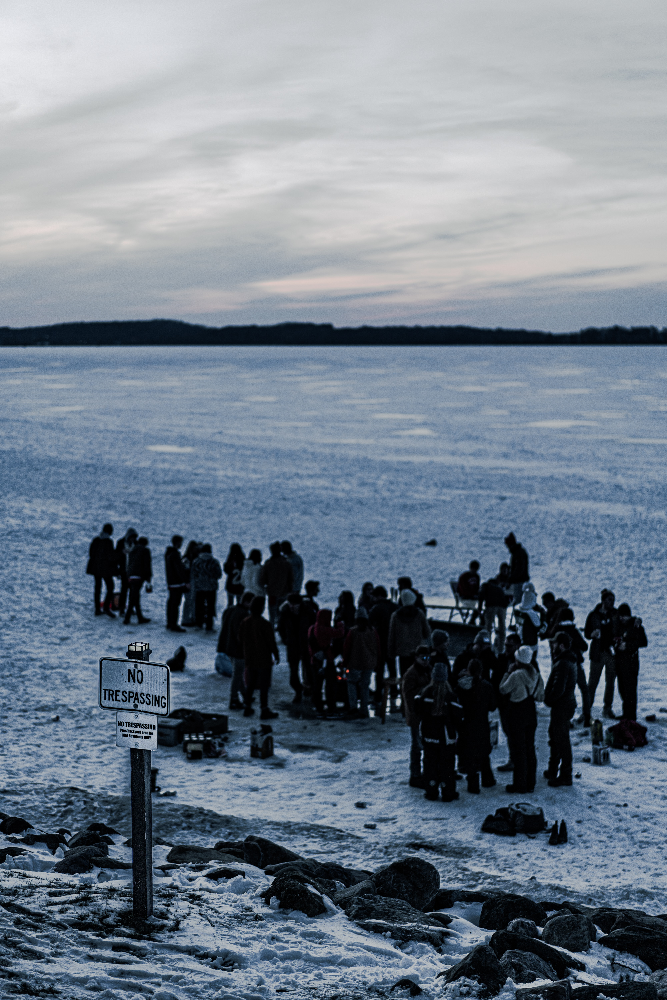
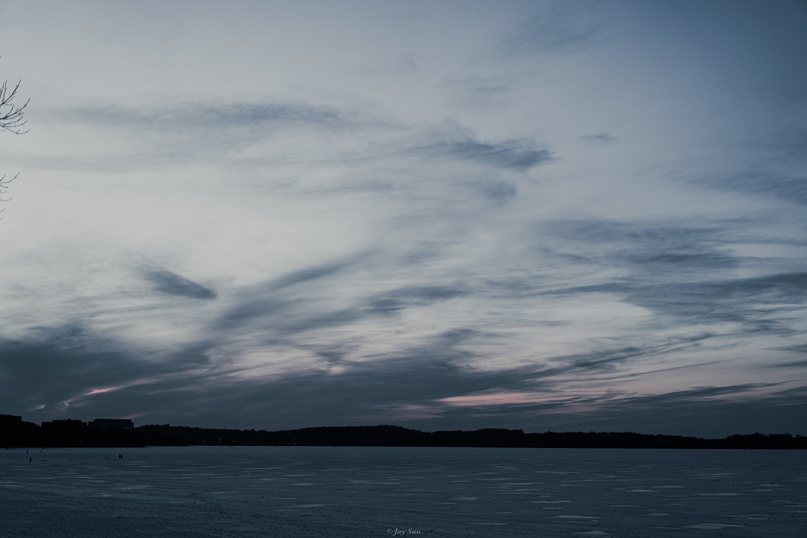

Seeing Maple Leaves in Northern Michigan is a quintessential autumn experience, celebrated for its breathtaking beauty and natural spectacle. As summer transitions into fall, Northern Michigan becomes a canvas of vibrant colors, with maple trees donning their brilliant hues of red, orange, and gold. This seasonal transformation attracts visitors from near and far, eager to witness the stunning display of fall foliage that marks the region as a prime destination for leaf peeping.
 
Madison, the capital city of Wisconsin, is a vibrant and picturesque city known for its unique blend of urban sophistication and natural beauty. Nestled between Lake Mendota and Lake Monona.Madison is also home to the University of Wisconsin-Madison, one of the leading public research universities in the United States. The presence of the university contributes to the city's lively atmosphere, fostering a community rich in culture, education, and research. The campus, sprawling along the shores of Lake Mendota, enhances the city's scenic beauty and offers numerous academic, sporting, and cultural events throughout the year.